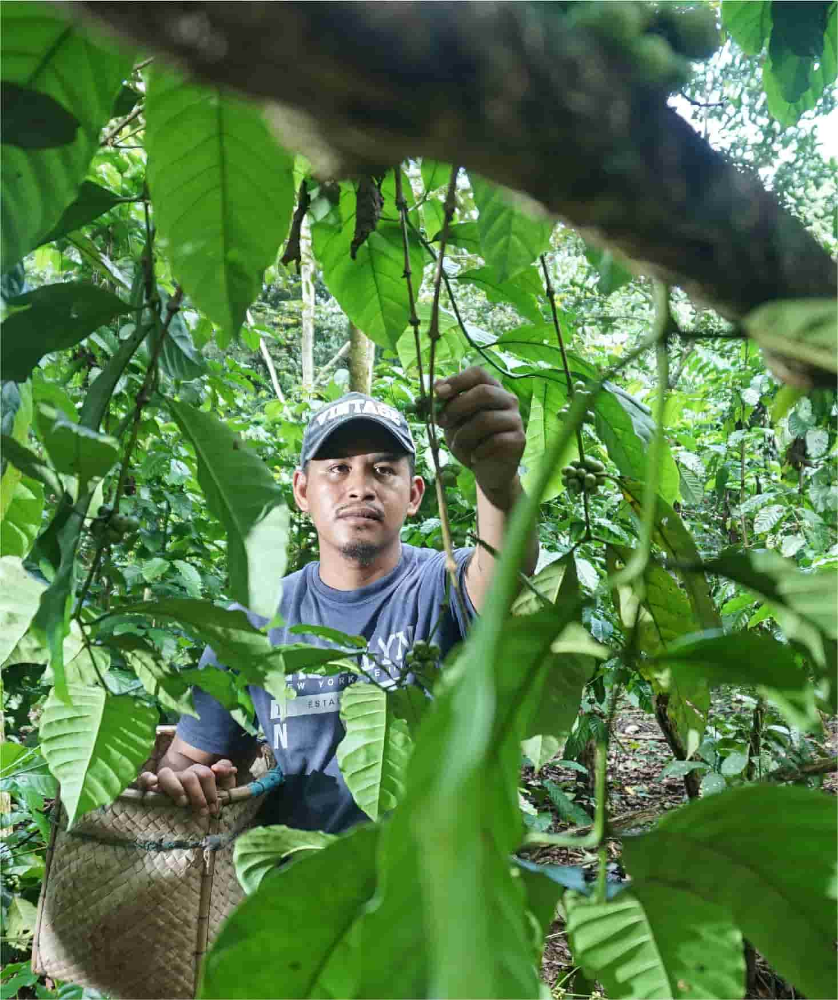

United Nations In Indonesia
Country Results Report 2021
Enabling Local Economic Development

About 43% of Indonesia’s population lived in rural areas in 2020, according to the World Bank. But Indonesia’s complex geography means many of them—including many indigenous communities—risk being cut off from economic progress. Today, people living in Indonesia’s rural areas endure poverty at about double the rate of those who live in urban areas.
The UN is supporting rural livelihoods through two partnerships with the Ministry of Agriculture. Under one irrigation-focused project, the UN set up field schools in hundreds of villages across 14 provinces to provide training for farmers, as well as high-quality seeds and equipment to contribute towards more sustainable farming practices. The project reached more than 1 million people in 265,000 farming households. Some 80% of the farmers that participated were using superior seeds by the end of 2021, 62% had adopted a planting productivity system taught at field schools known as jajar legowo, and a further 40% had switched to organic fertilisers. This contributed to an average yield increase of 22% outside of Java, as well as reduced use of fertiliser thanks to soil testing equipment distributed through the project. The project also produced several manuals to support training on market access and financial literacy, which are expected to reach a further 80,000 households in 2022.
A parallel project with the Ministry of Agriculture, distributed 37,583 packages of agricultural supplies— seeds, fertiliser, and basic equipment—to at least 2,376 farmer groups comprising 55,804 members, of whom 40% are women. The UN also distributed 105,313 seed packages to more than 100 “seed breeders”, who contribute to boosting biodiversity in Indonesia. A midline survey found that 87% of the farmers involved had adopted improved methods of fertilisation introduced through the project.
In 2021, the UN helped the government relieve pressure on some of Indonesia’s most food-insecure people living in rural regions and exposed to the risk of peatland fires. Across Sumatera, Kalimantan, and Papua provinces, many farmers rely on the cultivation of crops that grow on peatlands, one of Indonesia’s most ecologically valuable but at-risk resources. There, the UN assisted acutely vulnerable smallholders in establishing 100 home gardens and 21 demonstration plots for peatland-friendly products including ginger, lemongrass, aloe vera, betel, and vegetables that contribute to household micro and macronutrient needs. The UN also established three “rural zones’ in Riau, Central Kalimantan, and South Kalimantan provinces, which regulate land use to prevent the degradation of vulnerable peatland; the project trains local farmers in yield improvement, budgeting, and market dynamics to help them scale up successful commodities for the local market. Similar interventions boosted the livelihoods of women purun weavers in two villages in South Sumatra and South Kalimantan, coconut sugar producers in four villages in West Kalimantan, and sago farmers in three villages in Riau, all of whom traditionally have limited access to an independent income. UN support for these groups included assistance testing product viability for domestic and international markets and priming the supply chain to accept products once pandemic- related coordination bottlenecks clear.
To further support vulnerable communities, the UN advanced an approach to enriching peatland through the application of organic fertilisers as opposed to ash. The project established 70 community groups across six Indonesian provinces to aid in the production of peatland-based agricultural products through a combination of knowledge sharing, training and access to tools and other resources, boosting the incomes of around 700 farmers and their dependents, many of whom lack access to basic health facilities and markets. The UN also supported four farmers’ groups in Mempawah District, and Kubu Raya, West Kalimantan through the provision of processing units to facilitate the production of organic coconut sugar for export.
In Bali, where COVID-19 induced slowdowns in the tourism sector have resulted in some families returning to seaweed farming, funds provided under the Global Environment Facility’s Small Grants Programme helped a local civil society organisation increase the area of seaweed cultivation in Nusa Penida and introduce 28 additional income-generating activities that benefitted 2,264 people directly, uplifting a broader community of 94,328 people. Meanwhile, a local economic development initiative targeting impoverished communities along the Indonesian-Timor Leste border, helped women to perform economically productive activities, such as vegetable farming, and gave women a voice in community decision-making.